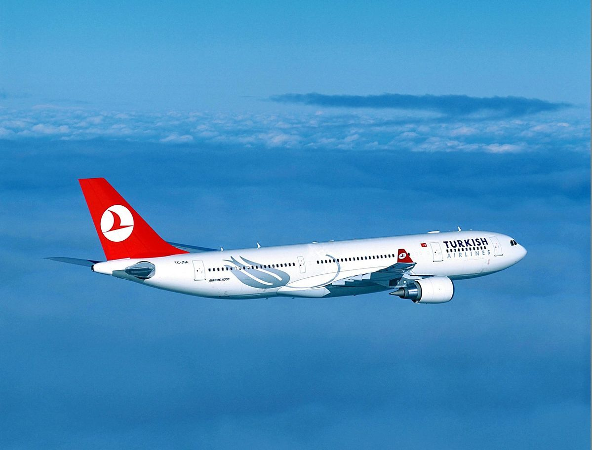

Pace Testi Nedir?
Geçtiğimiz yıllarda uygulanmaya başlayan psikometrik değerlendirme sistemi PACE adıyla uygulanmaktadır. Bu test, adayların teknik yeterliliklerini ölçmeyi amaçlamakta olup THY Uçuş Eğitim Başkanlığı bünyesinde gerçekleştirilmektedir. Uygulama süresi ortalama 5–6 saat sürmektedir. Bu test 2 bilgi ve 7 yetenek modülünden oluşmaktadır.
Yetenek Modülleri
Yetenek modülleri, bir pilotta bulunması gereken temel bilişsel ve psikomotor becerileri değerlendirmeye yöneliktir. Bu kapsamda uzamsal algı, bellek, psikomotor ve dikkat koordinasyon gibi kritik yetkinlikler ölçülmektedir.
Değerlendirme sürecinde yer alan başlıca modüller şunlardır:


Bilgi Modülleri
Bilgi modülleri, adayların temel Matematik ve Fizik düzeylerini değerlendirmek amacıyla uygulanmaktadır. Bu modüller, analitik düşünme becerisi ile temel bilimsel bilgilerin anlaşılma seviyesini ölçmeye yöneliktir.
Değerlendirme sürecinde yer alan başlıca modüller şunlardır: